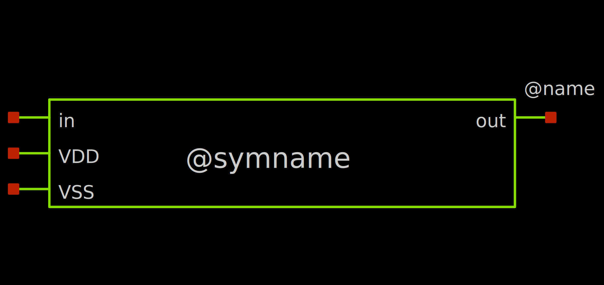

Creating a New Design
Creating a new Block¶
Here, we will create our own inverter design, including a sub-sheet, symbol and testbench.
Creating the Schematic¶
To create a new schematic in XSCHEM, we simply create a new .sch file (schematic format for XSCHEM). We can do this via
Info
You will get a warning that the file does not exist, which is fine.
Now, you should see a blank schematic editor window where you can start building your inverter design.
Symbols
We start by placing our two MOSFETs (NMOS and PMOS) in the schematic. To do this, select the Insert Symbol symbol from the toolbar (looks like an AND gate) or press Insert on your keyboard.
This will open the Choose symbol dialog, where we can see some libraries. In our case, we choose the one ending with ihp-sg13g2/libs.tech/xschem. There, we choose sg23g2_pr and sg13_lv_nmos. Click OK to insert the symbol into the schematic. Place the symbol by moving it somewhere sensible and by then left-clicking to confirm the placement.
Repeat this for the PMOS transistor by selecting sg13_lv_pmos from the same library.
Wires
Now, we connect the gates and the drains of the NMOS and PMOS transistors together to form the inverter structure. You can place a wire by pressing W on your keyboard while you are at your first connection point. If you want to have a corner in your wire, move the cursor to the position of the corner and press W again. This will place the first wire segment. Then, when you are at the second connection point, simply left-click to finalize the wire placement.
Also place some short wires out of the sources and bodies of the transistors as well as some input and output wires out of the gates/drains.
The resulting schematic might look something like this
{kind=link}
Labels
Now, let's place some labels to identify each net. To do this, open the Choose symbol dialog by pressing Insert again and go to the builtin devices library. You can do this by pressing the Home button on the bottom left. This will choose the xschem_library/devices library. These are the spice primitives (not physical devices).
We want to search for the lab symbols. You can do this by clicking into the search field on the bottom left and by entering lab. This will give us some different options, but we are taking the lab_pin.sym symbol. Select it and place it on the end of the input wire.
To copy a symbol instance, select the label and press C. This will attach a new instance to the cursor. You can rotate the current instance by pressing Ctrl + R.
Repeat this for the output wire and sources/bodies wires of the transistors.
To rename a label, simply double-click on it and enter the new name (lab parameter). Name the labels:
- Input:
in - Output:
out - NMOS source/body:
VSS - PMOS source/body:
VDD
Pins
Since we want the inverter to be a symbol in the end, we need to place to place the pins of the symbol. To do this, we use ipin.sym for inputs, opin.sym for outputs and iopin.sym for bidirectional pins from the generic library.
Place the following pins:
- Input:
ipin.sym, name itin - Output:
opin.sym, name itout - VSS:
iopin.sym, name itVSS - VDD:
iopin.sym, name itVDD
These pins will attach to the nets of the same name, so we dont need to connect them further.
The resulting schematic might look something like this
{kind=link}
Creating the Symbol¶
Now, we want to create a symbol for our inverter.
For this, navigate to the Symbol menu in the toolbar and click on Make symbol from schematic. This will create a inverter.sym file in the same directory as inverter.sch.
Open the symbol using
You should see the default generated symbol for the inverter. 
{kind=link}
This is good but it looks quite boring. You can improve it by editing the symbol by moving/rotating the pins around and by adding new polygons (P), generally using the tools in the toolbar.
An improved symbol might look something like this
{kind=link}
Creating the Testbench¶
Now, we create a testbench for our inverter.
For this, create the testbench schematic:
Placing our new Block¶
Place your inverter symbol by going to the current directory via the Current Dir button of the Choose symbol dialog (Insert) and selecting the inverter.sym file.
Placing the Testbench Components¶
Now, we need to connect the input and output of the inverter to the testbench. Specifically, we add:
- Input: Rectangle voltage source
- VSS/VDD: DC supply voltages
- Output: Some loading resistor
Place three voltage sources vsource from the generic library.
Place one resistor res from the generic library.
Place grounds (gnd) at the lower terminals of each voltage source and the resistor.
Connect the voltages and resistor accordingly using wires (W). I suggest using labels for clarity.
Set the voltages for the voltage sources:
- VSS:
0 - VDD:
1.5 - Input:
"pulse(0 1.5 1n 0.1n 0.1n 1n 2n)"(Dont forget the quotes)
This generates a pulse waveform from 0 to 1.5V, with a delay for the first edge of 1 ns, 0.1ns fall and rise times, 1 ns high time and 2 ns period.
Set the resistance to 1Meg.
Setting up the Simulation Commands¶
Now, we need to write the commands for actually running the simulation. We will just take them from the XSCHEM PDK starting site. In a new terminal, open XSCHEM via xschem. From the PDK start page, select (select multiple via holding Shift):
- "Load IHP SG13G2 spice models for ngspice" (
Libs_Ngspice) - "Simulation skeleton for ngspice" (
SimulatorNGSPICE) - "Create .save file, create netlist, simulate with ngspice" (
SimulateNGSPICE)
Copy these blocks via Ctrl+C and paste them into your testbench schematic via Ctrl+V.
At the moment, this simulates the operating point only. We need to modify the SimulatorNGSPICE code block, specifically, we need to change the op command to (to also save all voltages/currents):
<filename> instances to inverter_tb.
Adding Graphs¶
We also want a graph, which can be placed via Simulation -> Graphs -> Add waveform graph. Also, add a waveform reload launcher via Simulation -> Graphs -> Add waveform reload launcher.
The resulting testbench might look something like this
{kind=link}
Running the testbench¶
Now, run the testbench via Ctrl + left click on the SimulateNGSPICE launcher. Then, load the waves via the load waves launcher.
Now, we want to add some traces to the graph. You can do this by double-clicking in the middle of the graph. You should be able to see a list of traces to plot on the left side. There, find and add the in and out traces by double-clicking on them.
By default, all traces are the same color. To changes that, click on the AUTO SET button on the bottom right.
Now, click Apply and OK. You should see some traces in the graph, but you need to adjust the time scale to see the pulses clearly. You can do this by holding Shift and scrolling the mouse wheel to zoom in and out, or by holding Ctrl and scrolling to pan.
{kind=link}